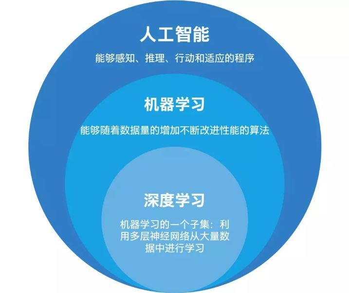
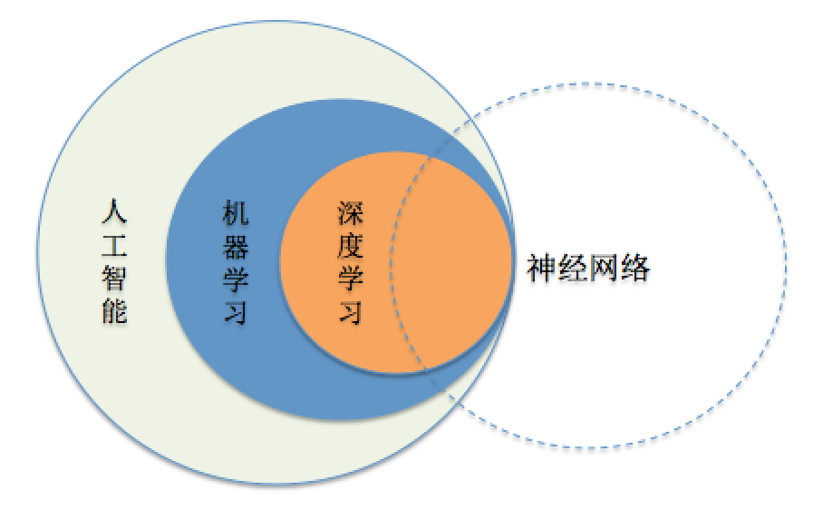
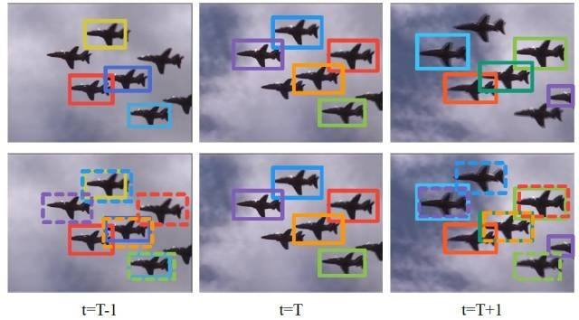
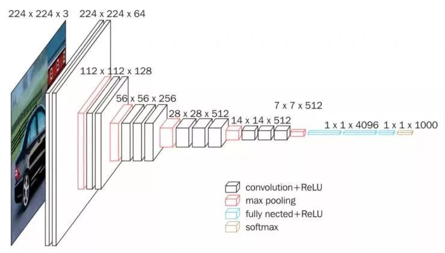
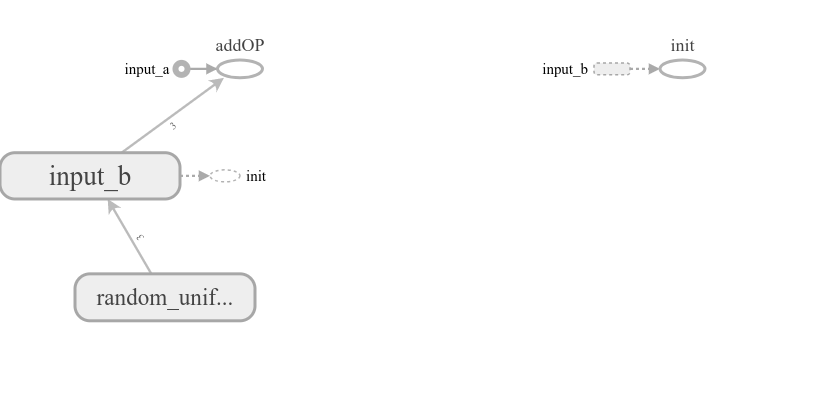

??
???????<
Python 3.5.6 |Anaconda, Inc.| (default, Aug 26 2018, 21:41:56)
Type 'copyright', 'credits' or 'license' for more information
IPython 6.5.0 -- An enhanced Interactive Python. Type '?' for help.
PyDev console: using IPython 6.5.0
Python 3.5.6 |Anaconda, Inc.| (default, Aug 26 2018, 21:41:56)
[GCC 7.3.0] on linux
In[2]: import tensorflow as tf
In[3]: tf.__version__
Out[3]: '1.9.0'
?????????????????????github??????github??????
- [x] Edit By Porter, ????,?????
??????


???????
- ?????
- ????
- ??????
- ????
???????????????????????
?????????????????????????????????????????AlexNet ???????ILSVRC(ImageNet LargeScale Visual Recongnition Challenge)???.


????????LFW(Labeled Faces in the Wild)?????????????DeepID2 ????99.47%?????
- ????????????????
??????????????
- ?????????
???????TIMIT????????????????(gaussian mixture model, GMM)?????21.7%?????????????17.9%.
?2012?????????????????????????????????????????20%,
- ??????
??????????????????????????????????????????????????????????????????
- ????
AlphaGo ?????????????????????????????AlphaGo?????????????????????????????????????????????????DeepMind????????????????????????????2?API
?????????????????????????????????????????????????????????????????????????????????????????????????????
TensorFlow????
?????tensorflow????
import tensorflow as tf
a = tf.constant([1.0, 2.0], name="a")
b = tf.constant([2.0, 3.0], name="b")
result = a + b
sess = tf.Session()
sess.run(result)
print(a, b, result)
?TensorFlow???????????????????????????????????????????result???????????(session), ??????????(session)??????
TensorFlow??
TensorFlow ????
TensorFlow???????Tensor?Flow?tensor?????????????????Flow???????????????????????????TensorFlow????????????????????
TensorFlow ??????
????????????tensor a?????????a.graph????
tf.get_default_graph ???????????
tf.get_default_graph()
Defined in tensorflow/python/framework/ops.py.
Returns the default graph for the current thread.
The returned graph will be the innermost graph on which a Graph.as_default() context has been entered, or a global default graph if none has been explicitly created.
NOTE: The default graph is a property of the current thread. If you create a new thread, and wish to use the default graph in that thread, you must explicitly add a with g.as_default(): in that thread's function.
Returns:
The default Graph being used in the current thread.
???????????????????????????????
print(a.graph is tf.get_default_graph())
???true????????????????????????
TensorFlow????tf.Grap?????????????????????????????????????????????????????
?????????????????????????????????????????????????????????????????????????????????????????????????????????????????????????????????????????????????????????????????????????????????????????????????????????????????????????????????????????????????????????????????????????????
tf.Graph ?????????,??????????????????tensorflow????????
Class Graph Defined in tensorflow/python/framework/ops.py.
A TensorFlow computation, represented as a dataflow graph.
A Graph contains a set of tf.Operation objects, which represent units of computation; and tf.Tensor objects, which represent the units of data that flow between operations.
A default Graph is always registered, and accessible by calling tf.get_default_graph. To add an operation to the default graph, simply call one of the functions that defines a new Operation:
c = tf.constant(4.0)
assert c.graph is tf.get_default_graph()
Another typical usage involves the tf.Graph.as_default context manager, which overrides the current default graph for the lifetime of the context:
g = tf.Graph()
with g.as_default():
# Define operations and tensors in `g`.
c = tf.constant(30.0)
assert c.graph is g
???TensorFlow ???
import tensorflow as tf
a = tf.constant([1.0,2.0,3.0], name='input_a')
b = tf.Variable(tf.random_uniform([3]), name='input_b')
add = tf.add_n([a, b], name='addOP')
with tf.Session() as sess:
sess.run(tf.global_variables_initializer())
writer = tf.summary.FileWriter("./logs", sess.graph)
print(sess.run(add))
writer.close()
???????????????tensorflow??????
tensorboard --logdir=logs
--logdir=logs??logs????????????
?????????
porter@porter-Aspire:~/??/????/MNIST$ tensorboard --logdir=logs
W0417 10:54:21.140615 Reloader tf_logging.py:120] Found more than one graph event per run, or there was a metagraph containing a graph_def, as well as one or more graph events. Overwriting the graph with the newest event.
W0417 10:54:21.153187 Reloader tf_logging.py:120] Found more than one graph event per run, or there was a metagraph containing a graph_def, as well as one or more graph events. Overwriting the graph with the newest event.
W0417 10:54:21.153477 Reloader tf_logging.py:120] Found more than one metagraph event per run. Overwriting the metagraph with the newest event.
TensorBoard 1.9.0 at http://porter-Aspire:6006 (Press CTRL+C to quit)
??????????http://porter-Aspire:6006???????????????

什么